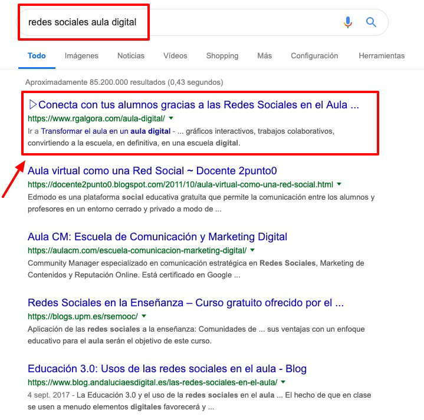
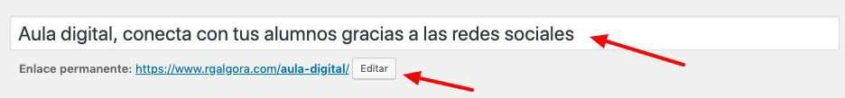
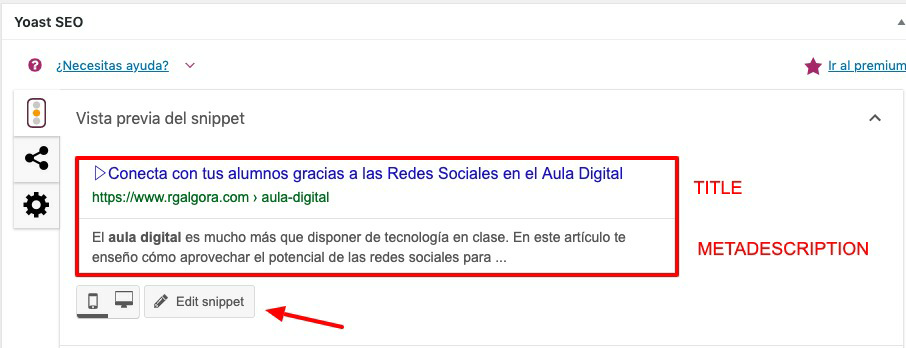
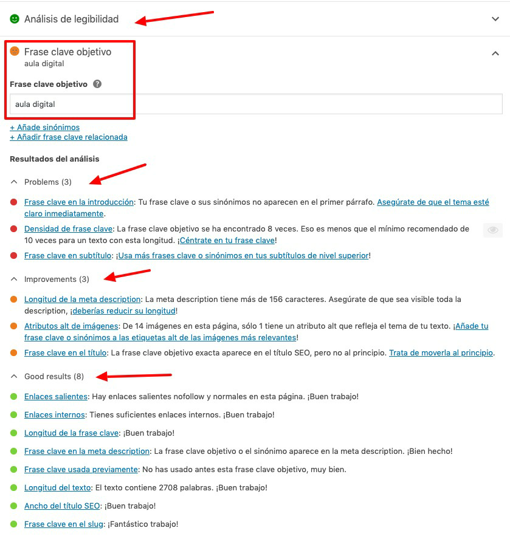

Optimización de URL y de snippets
Os voy a enseñar cómo se optimiza url y snippets a partir de un artículo que escribí en mi blog.
La palabra clave escogida para este artículo fue: redes sociales aula digital

Si analizamos el snippet marcado en rojo podéis ver tres partes:
- Título: Conecta con tus alumnos gracias a las Redes Sociales en el Aula..
- Url: https://www.rgalgora.com/aula-digital/
- Descripción: Transformar el aula en un aula digital… (en este caso Google ha incluido un enlace dentro de la descripción porque él ha querido, aunque no es lo normal)
Vamos a ver cómo podemos optimizar estas tres partes gracias a SEO Yoast.
Url del contenido
Debe ser corta, amigable, descriptiva e incluir la palabra clave.

En la primera caja de texto se escribe el título, que es el H1. Debe incluir la palabra clave y cuánto más a la izquierda mejor - sin sonar a robot-
Cuando rellenéis esa caja de texto, la url, denominado enlace permanente, se completa solo con todas las palabras del título. Por lo que en un principio quedó de esta forma:
https://www.rgalgora.com/aula-digital-conecta-con-tus-alumnos-gracias-a-las-redes-sociales
Es muy largo, por lo que interesa clicar en editar y dejarlo únicamente con palabra clave o palabra clave y algún término que lo defina.
En mi caso lo dejé únicamente como /aula-digital/ aunque podría haber sido /aula-digital-redes-sociales/
Nota: ¡IMPORTANTE! No modifiques ninguna url que ya tengas publicada, pues al realizar modificaciones en la url se generan errores 404. Esta optimización solo sirve para las nuevas entradas que vayas a escribir.
Extra: Demasiado tarde, he modificado una url antes de leer tu nota…¿qué hago? Nos introducimos en el apasionante mundo de las redirecciones 301.
Las redirecciones 301 se utilizan para indicar a Google que la url A, la primera que existió, ya no está disponible y que ahora la válida es la url B.
Por ejemplo, tienes una url que es Url a: https://www.eleternoestudiante.com/dinamicas-de-grupo-divertidas-en-ingles-para-alumnos-de-secundaria-354678-enero-2017/
y has cambiado la url a algo más corto y amigable url b: https://www.eleternoestudiante.com/dinamicas-de-grupo-ingles-secundaria
Con la redirección 301 le decimos a Google que cuando llegue a la url A, ésta le lleve directamente a la url B.
Más adelante, te indico un plugin para hacerlo.
Title y metadescription
Deben ser atractivos, incentivar al click para destacar en el listado de resultados y aumentar el CTR. Además ambos deben incluir la palabra clave.

Al final de cada artículo vas a encontrar el módulo de seo yoast. Clicas en el botón “edit snippet” y puedes crear tu title y metadescription.
EXTRA: para generar snippets muy optimizados y ver cómo quedan antes de publicarlos, utiliza la herramienta online seomofo snippet https://seomofo.com/snippet-optimizer.html
Siguiendo con las opciones del plugin SEO Yoast, justo debajo del módulo del snippet vas a ver dos módulos: análisis de legibilidad y frase clave objetivo.
Debes desplegar el módulo “frase clave objetivo” y añadir en ese recuadro la palabra clave de tu artículo.
SEO Yoast funciona como un semáforo, siendo verde la mejor puntuación y roja, la peor. No te obsesiones con el semáforo. Si aparece en rojo seguramente sí se le pueda dar una vuelta al artículo y mejorarlo; si aparece el naranja no te compliques demasiado. Si es verde, ¡felicidades!.

Ya para terminar con SEO Yoast, el último módulo que tiene es “contenido esencial”, márcalo solo con tus artículos pilares.

Posicionamiento SEO por Rocío García Algora bajo licencia Creative Commons Reconocimiento-NoComercial-CompartirIgual 4.0 Internacional License.